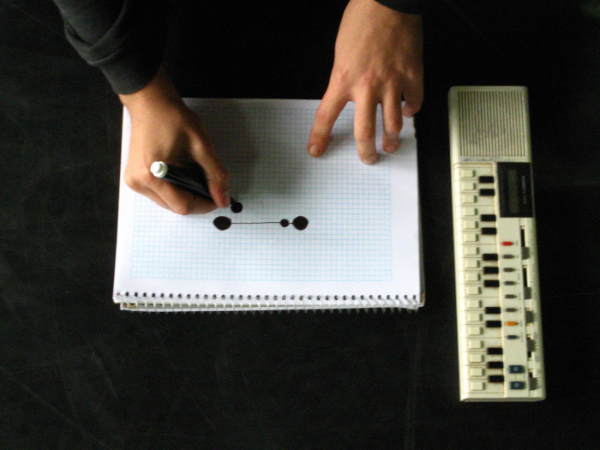
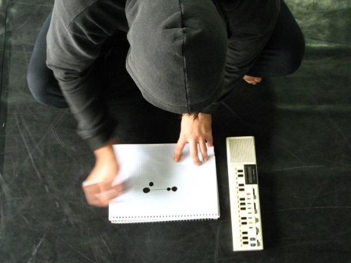

A Casa Hoffmann foi um espaço reformado para receber as artes performáticas. A curadoria era de Rosane Chamecki e Andréa Lerner. Como bolsistas, nós éramos convidados não só a participar das oficinas, como também a produzir nossos próprios trabalhos e movimentar a casa, produzindo conexões com outros setores da cultura da cidade.
Ali se conheceram os artistas que posteriormente formariam o Couve-Flor — Mini Comunidade Artística Mundial.
Passaram pela Casa Hoffmann nesse período Dani Lima, Margarita Guergue, Eleonora Fabião, André Lepecki, Deborah Hay, Tere O'Connor, John Jasperse, Ko Murobushi, Xavier LeRoy, entre tantos outros.
Co-organizador e curador do Ciclo de Ações Performáticas (2004–2005) e curador dos eventos Retrovisor, Ocupação Performance Rave e Novo Ciclo.
Poser · O laboratório multiceptivo do Dr. Schwitters · Dois corações e um bebê ou Abre um pouco #2 (Emocore Cardio Dub Edit), a Ordem das Coisas

